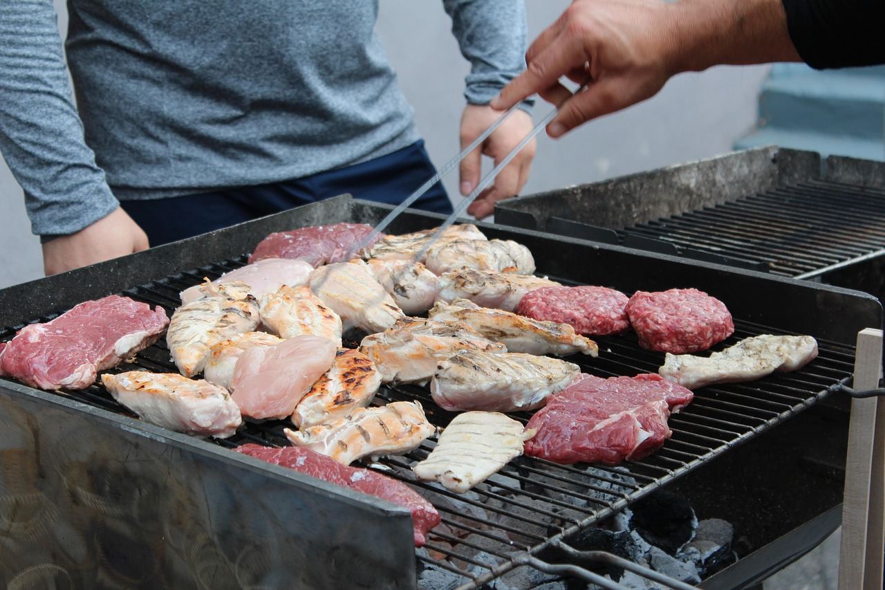
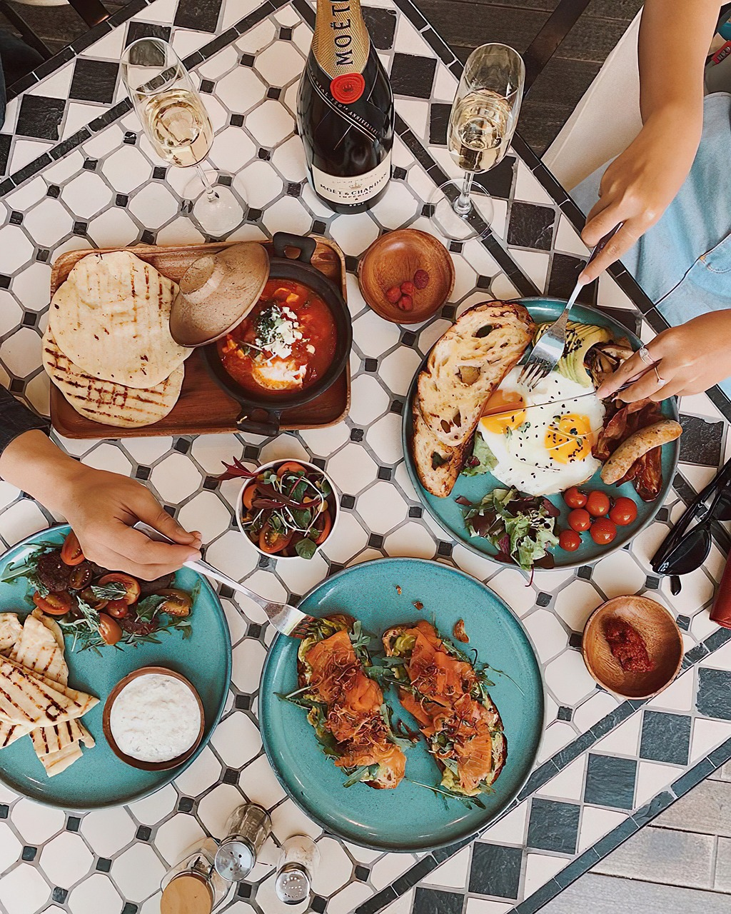

Oficina Central de Carnes y
Algo Más:
Calle Tec 123, Zacatlan, México
Fax: +123 456 7891
Llámanos al: +123 456 7890
Nuestros Servicios
En Carnes Y Algo mas, no solo nos enfocamos en ofrecerte los mejores cortes de carne, sino también en brindarte una experiencia de compra excepcional. Sabemos lo importante que es contar con un servicio eficiente, cómodo y confiable. Por eso, hemos diseñado una serie de servicios pensados para hacerte la vida más fácil y deliciosa.
1. Entrega a Domicilio Rápida y Segura
Tu comodidad es nuestra prioridad. Ofrecemos un servicio de entrega a domicilio eficiente y seguro, asegurándonos de que tus cortes de carne lleguen frescos y en el menor tiempo posible. Realizamos entregas a nivel local, y si estás en una zona fuera de nuestra área principal, ¡consulta por nuestras opciones de envío!
Beneficios:
- Entrega en el mismo día o en el plazo que elijas.
- Empaque refrigerado para mantener la frescura de tus productos.
- Opciones de seguimiento en tiempo real para tu pedido.
2. Cortes Personalizados
Si buscas un corte específico o una pieza de carne preparada de manera especial, ¡nosotros lo hacemos por ti! Nuestro equipo está capacitado para cortar y preparar carnes a medida según tus preferencias. Ya sea un grosor exacto, un tipo de corte o una pieza personalizada, ¡te ayudamos a obtener lo que necesitas!
Beneficios:
- Cortes a medida según tus preferencias.
- Asesoramiento personalizado para elegir el corte perfecto.
- Preparación especial para ocasiones especiales (fiestas, parrilladas, etc.).

3. Asesoría en Cocina y Selección de Productos
¿No sabes qué corte elegir o cómo prepararlo? Nuestro equipo de expertos está a tu disposición para brindarte recomendaciones sobre los mejores cortes según tu platillo, así como consejos de preparación, cocción y maridaje. ¡Queremos que disfrutes al máximo cada bocado!
Beneficios:
- Recomendaciones personalizadas según tu tipo de receta.
- Consejos de cocción para obtener los mejores resultados.
- Sugerencias de marinados, salsas y acompañamientos.
4. Servicio de Parrilladas a Domicilio
Si tienes una ocasión especial o simplemente deseas disfrutar de una parrillada sin preocuparte por la preparación, te ofrecemos el servicio de parrillada a domicilio. Nosotros nos encargamos de todo: desde la selección de los mejores cortes hasta la cocción de la carne, para que tú solo te concentres en disfrutar de la comida y de tu compañía.
Beneficios:
- Servicio completo de parrillada con los mejores cortes.
- Parrilleros profesionales para garantizar la mejor cocción.
- Opciones de menús personalizados para tu evento.
5. Suscripción de Carne Fresca
Si eres un amante de la carne y quieres asegurarte de tener siempre los mejores cortes en casa, tenemos una opción de suscripción. Recibe tus cortes de carne favoritos de manera regular y disfruta de descuentos exclusivos, entregas programadas y la comodidad de no tener que salir de casa para hacer tu compra.
Beneficios:
- Recibe cortes de carne frescos y de calidad sin tener que pedir cada vez.
- Descuentos especiales para suscriptores.
- Flexibilidad en la frecuencia y tipos de cortes que deseas recibir.
6. Regalos Especiales para Amantes de la Carne
¿Buscas el regalo perfecto para un amante de la carne? Ofrecemos opciones de paquetes de cortes especiales que puedes regalar en cualquier ocasión: cumpleaños, celebraciones, o simplemente para sorprender a alguien especial. Nuestros paquetes vienen con una selección exclusiva de carnes y guarniciones, listos para ser disfrutados.
Beneficios:
- Paquetes personalizados según el gusto de la persona.
- Empaque especial para regalos.
- Opción de incluir tarjetas de felicitación.
¡Haz tu pedido hoy y disfruta de la comodidad y calidad de nuestros servicios!
Por qué Elegir Nuestros Servicios
- Comodidad: Con nuestros servicios de entrega a domicilio y asesoría personalizada, hacer tus compras de carne nunca fue tan fácil.
- Calidad y frescura garantizada: Todos nuestros productos son de la más alta calidad, asegurando que recibas lo mejor cada vez que nos elijas.
- Experiencia única: Nos aseguramos de que tu experiencia con nosotros sea memorable, brindándote atención personalizada y soluciones adaptadas a tus necesidades.